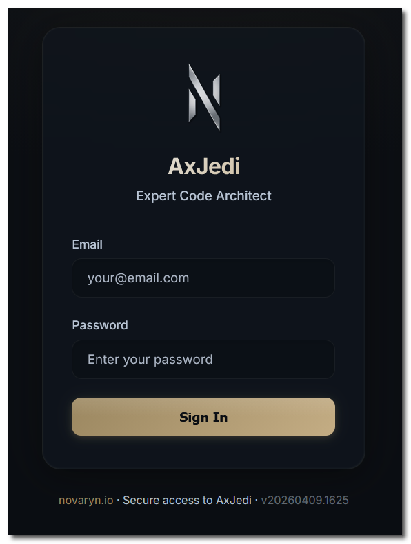
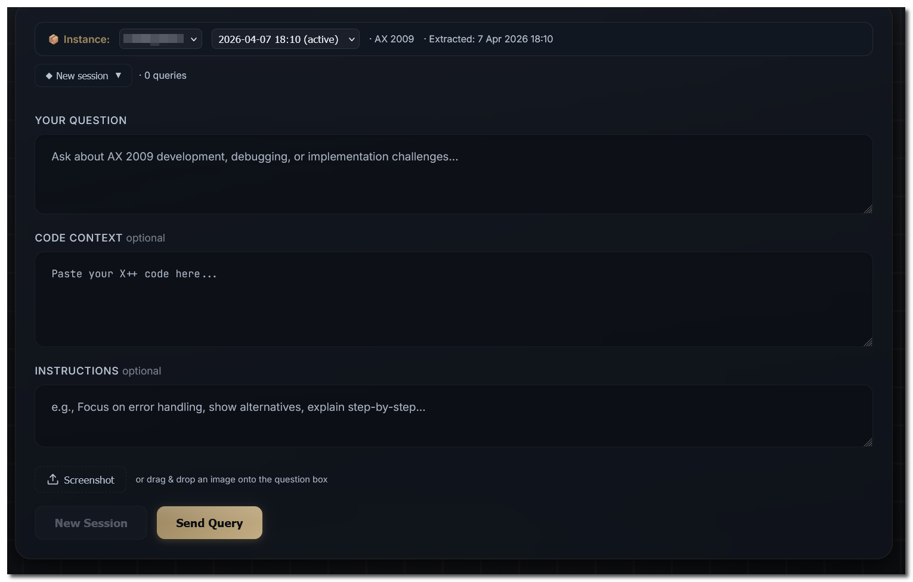
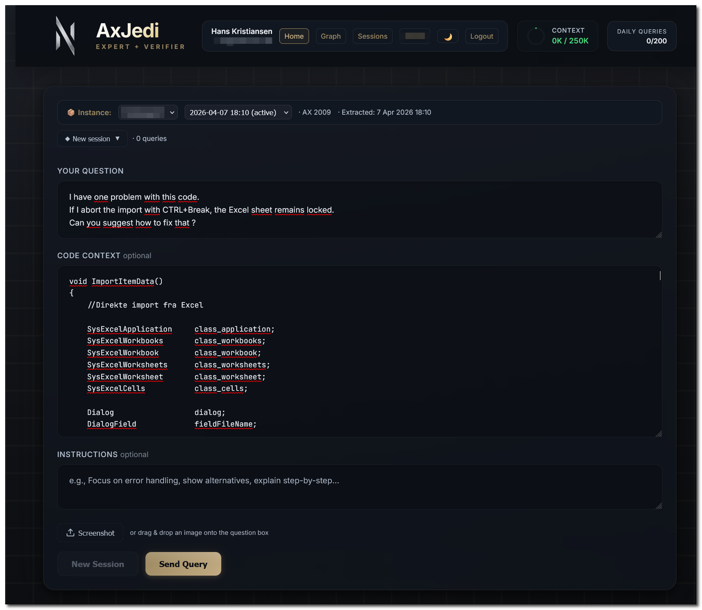

Login screen with secure account accessSecure Login
AxJedi starts with enterprise-grade access controls: individual developer accounts, IP restriction, and rate limiting. Each user gets isolated session history and usage tracking so teams can audit activity while keeping workstreams separate.

Question form before entering a query
Question form with AX instance, snapshot, and code contextAsk Your Question
Select your AX instance and extraction snapshot, then describe the challenge in the Question field. Paste relevant X++ into Code Context and add optional Instructions to steer the response. You can also upload images — screenshots of error messages, form layouts, or anything visual that helps AxJedi understand what you're working with.
Real-Time Analysis Progress
The Analysis Timeline shows an animated progress bar with performance markers, a live elapsed timer, and a sparkline for the last 20 query durations. Rotating status messages describe ongoing steps like graph search and identifier cross-reference. If the fast model cannot fully verify output, AxJedi automatically escalates to deep analysis mode.
Your Question, Understood
AxJedi begins by showing your original question so you can verify it interpreted the problem correctly. The full response is then structured into five expert sections for implementation, validation, and learning.
1 Answer Section
Section 1: Approach
The strategy section explains how AxJedi will solve the problem before any code appears. It outlines architecture, relevant AX patterns, and the reasoning behind the selected path so you can validate direction before implementation details.
2 Answer Section
Section 2: Verified Code
AxJedi returns working X++ verified against your real codebase. Every class name, table name, method name, and enum value is checked against 500,000+ indexed entries. One click copies production-ready code that follows your team patterns, not generic templates.
3 Answer Section
Section 3: Codebase Fit
This section explains how the generated implementation integrates with your current AX landscape. AxJedi references your actual classes, tables, and patterns to confirm the solution is native to your system rather than a foreign implant.
4 Answer Section
Section 4: Detailed Explanation
A structured reference table breaks down each method and code block: what it does, why it matters, and how core logic works. The explanation also highlights common mistakes and the business impact of the chosen approach.
5 Answer Section
Section 5: Learning Point
Every answer includes a teaching layer with deeper AX knowledge: core design patterns, version-specific concerns, practical debugging advice, and related approaches you can reuse in future tasks.
Continue the Conversation
Need more depth? Ask follow-up questions and AxJedi retains full context from the prior exchange. The Context Size indicator at the top shows remaining capacity so you can continue while token budget is available, or start a fresh session whenever needed.
Review Changes with Diff View
Inspect exactly what changed using color-coded diffs: green for additions and red for removals. Review each line before applying updates, with surrounding method context preserved so nothing is lost in review.
One-Click XPO Export
When the code looks right, export a properly formatted XPO file for direct import into your AX environment. No manual copy-paste and no formatting cleanup. Click export, download the file, and import into AX.
Transparent Token Usage
The Context Size indicator shows exactly how much model capacity is in use. Unlike opaque tools, AxJedi makes approaching limits visible so you can decide when to split queries for reliable analysis quality.
Interactive Codebase Graph
Explore your codebase as an interactive graph with 180,000+ nodes across classes, tables, forms, and their relationships. Search any entity and inspect its dependency network in detail.